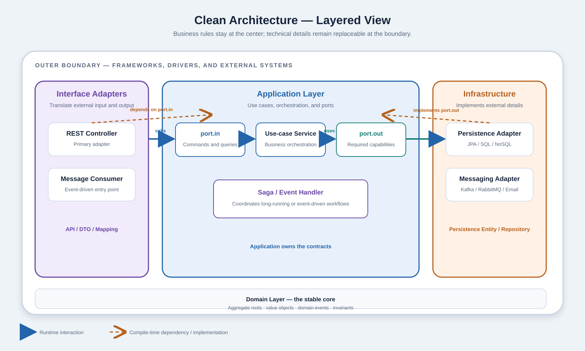
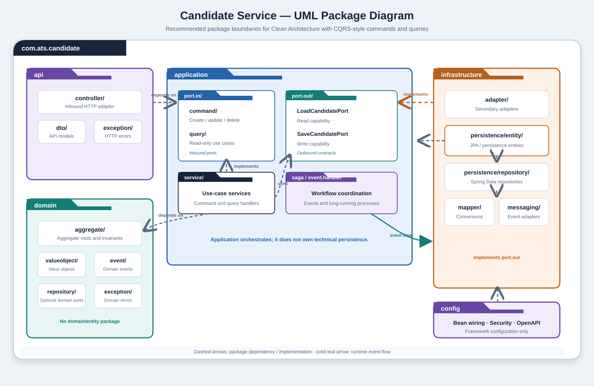

How the system can be used
An inbound port is the public application-facing contract for a use case. A controller, message consumer, or scheduled job calls it to request an action.
Example: ApplyForJobUseCase
Clean Architecture · Layered Style
Ports define the boundaries of the Application Layer. Commands and queries enter through use-case ports, while outbound ports let the application use external resources without becoming coupled to technical details.
In Clean Architecture, the Application Layer coordinates a business use case. A port is an interface that defines a boundary around that use case. The interface belongs to the layer that owns the business decision; an adapter supplies the technical implementation at the boundary.
An inbound port is the public application-facing contract for a use case. A controller, message consumer, or scheduled job calls it to request an action.
Example: ApplyForJobUseCase
An outbound port is a contract for an external capability required by the use case. A persistence adapter, email adapter, or API client implements it.
Examples: LoadJobPort, SaveApplicationPort
A query requests information without intentionally changing business state. It is still an inbound use case and normally enters through port.in.
Example: GetApplicationStatusUseCase
In CQRS terminology, a query is a request for information. It should not intentionally create, update, or delete business data. The word “query” may describe the input object, the use-case contract, or the handler; naming these roles explicitly keeps the design understandable.
public record GetApplicationStatusQuery(
UUID applicationId
) {}
public interface GetApplicationStatusUseCase {
ApplicationStatusView get(
GetApplicationStatusQuery query
);
}public class GetApplicationStatusService
implements GetApplicationStatusUseCase {
private final LoadApplicationStatusPort
loadApplicationStatusPort;
// Read data and return a view; do not change state.
}A query is not an alternative to port.in. It is a read-oriented use case exposed by port.in. Its data source is accessed through an outbound port such as LoadApplicationStatusPort.
Consider an applicant submitting a CV for an open job. The controller starts the flow through an inbound port. The application service performs the business coordination, then uses outbound ports to obtain and persist data.
The following example separates the use-case contract from the technical details of HTTP and persistence. The Application Layer can therefore be tested with simple test doubles instead of a running database.
public interface ApplyForJobUseCase {
ApplicationResult apply(
ApplyForJobCommand command
);
record ApplyForJobCommand(
UUID candidateId,
UUID jobId,
String cvUrl
) {}
}public interface LoadJobPort {
Optional<Job> findById(UUID jobId);
}
public interface SaveApplicationPort {
JobApplication save(
JobApplication application
);
}
// Implemented by infrastructure adapters.public class ApplyForJobService
implements ApplyForJobUseCase {
private final LoadJobPort loadJobPort;
private final SaveApplicationPort
saveApplicationPort;
// Validate job, create application, save result.
}public class ApplicationPersistenceAdapter
implements SaveApplicationPort {
private final ApplicationJpaRepository
repository;
// Translate domain object to JPA entity.
// Delegate persistence to the repository.
}The Application Service depends on SaveApplicationPort, not on JpaRepository. The database adapter depends on the port and implements it. This is Dependency Inversion in practice.
| Component | Responsibility | Example |
|---|---|---|
| Inbound port | Expose a use case | ApplyForJobUseCase |
| Application service | Coordinate the use case | ApplyForJobService |
| Query | Request information without changing state | GetApplicationStatusQuery |
| Query service | Execute a read use case | GetApplicationStatusService |
| Outbound port | Describe a required capability | SaveApplicationPort |
| Primary adapter | Drive the application | REST controller |
| Secondary adapter | Implement an external capability | JPA persistence adapter |
A wall socket defines a standard interface. A device uses the socket without knowing how electricity is generated. The socket is comparable to a port; the plug and power station are comparable to adapters and external infrastructure.
| Socket used by a device | Outbound port: SaveApplicationPort |
| Device asking for an action | Inbound caller: REST controller |
| Device’s internal behavior | Application service: use-case coordination |
The first figure explains the Clean Architecture dependency direction. The second applies that direction to the candidate service package structure, including commands, queries, outbound ports, persistence entities, and infrastructure adapters.

